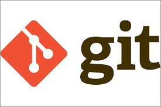

GIT

Introduction
If you have ever developped an application or if you are familiar with coding you may have hearrd the word Git at least one time.And if you haven't but still interested in understanding what it is ,i will accompagn you through this article to uderstand Git,its concept and the history that lead to its appearance. So without further ado , let's simply start by getting a general idea of what Git is.
Definition
Git is a distributed version control system ( No panic ! we'll explain this soon ) that appeared in 2005 and created by the father of Linux Linus Torvalds ,used by developers to track and manage changes in the code of projects they make. In other words : if you ever developped an application you may have found yourself working on a new feature of it and just all in a sudden, a bug appears and you need to get back to the old version that contains the functionning code.For that Git comes to help in :
- Making a record of all the changes that have been done in a project, and give us the possibility to revert to a specific version that we want to.
- It also gives the possibility to many collaborators to work on the same project and all his work to be merged into one source code ; well in real world projects,not only one developpers is working on the application for that bugs are very likely to appear and if we evr want to know who made a certain change to the code ,when and why in order to fix what can be fixed or just to re-establish the last working version.All of that Git can afford !
So here you can say : But we heard you say Git is a version control system , so do we understand there are others ? Well actually yeah that why i said that we will explain this later, so in the next section we will talk about what version control systems are and how are they different!
Version Control Systems
Version Control Systems ( VCS ) - often called source code manager (SCM), revision control system (RCS), and with several other permutations of the words “revision,” “version,” “code,” “content,” “control,” “management,” and “system” - are tools that manages and tracks different versions of software or digital content. Just as defined in the Git paragraph. But if you have a sharp sight you may see a Distributed word in there ! Well in fact here why I had to enhance the explanation to this paragrah. Other VCS exist indeed but they fall into different categories according to this way they work, for that we can count 2 main categories :
- Centralized version control : With centralized version control systems, you have a single central copy of your project on a server and commit your changes to this central copy. You pull the files that you need, but you never have a full copy of your project locally. Some of the most common version control systems are centralized, including Subversion (SVN).
- Distributed version control : With distributed version control systems (DVCS), you don't rely on a central server to store all the versions of a project’s files. Instead, you clone a copy of a repository locally so that you have the full history of the project. Two common distributed version control systems are Git and Mercurial.

History and popularity
As with every technology, the history of creation must be alligned with some needs or events, so here is a little snippet of Git history. The Linux kernel is an open source software project of fairly large scope. During the early years of the Linux kernel maintenance (1991–2002,changes to the software were passed around as patches and archived files. In 2002, the Linux kernel project began using a proprietary DVCS called BitKeeper. In 2005, the relationship between the community that developed the Linux kernel and the commercial company that developed BitKeeper broke down, and the tool’s free-of-charge status was revoked. This prompted the Linux development community (and in particular Linus Torvalds, the creator of Linux) to develop their own tool based on some of the lessons they learned while using BitKeeper. Some of the goals of the new system were as follows:
- Speed
- Simple design
- Strong support for non-linear development (thousands of parallel branches)
- Fully distributed
- Able to handle large projects like the Linux kernel efficiently (speed and data size) The Linux project started using Git in 2005, and many of the other major Open Source projects switched to it over the next several years. This gave Git a lot of high-profile influencers very early.
Pros and Cons :
As we understood from previous paragraphs, many VCS exist for that we need to understand what Git is capable of and where its flaws reside :
Advantages :
- Open source and free : Gite is freely available on the internet. You may use Git to manage real estate projects without spending a dimeand because it is open-source, you may obtain its source code and modify it to meet your needs.
- Git works on all machines : In CVCS, the central server must be srong enough to service the entire team's queries.It is not really an issue for smaller groups, but the server's hardware constraints might become a performance bottleneck as the size of team rises.
- Branging and merging : These both are what set Git apart from other version management systems.Creating different branches is simple and it is simple to carry actons on branches like merging or or switching and removing.
- Non-linear development : Because collaborators can access the Git repository from anywhere, workj on it and update it, Git allows non-linear development by offering to branch and merging functionalities.
- Big community :
Git is the most used VCS nowadays which makes working with and encountering any issue less of a problem since it will be high probably solved by another user of Git.
Disandvantages :
- Learning curve : Although Git offers too many advantages, it's not that intuitive which makes learning it takes more time.
- Does not effectively handle storing large binary files : Git cannot compress these files effectively, meaning that the repository size can grow exponentially with each change to a large binary file.
How does Git work ?
Now after that we talked generally about Git and other Version Control Systems, I guess it's time to understand how does Git do its work.But before that we dive in, we should have a basic understanding of its basic commands :
- git init
- git add
- git commit
Let's see what happens when we create a directory using the git init command and when we use git add or git commit.
Initializing
The command git init creates an empty Git repository. Git now knows that it should watch the folder you initiated it on. Git creates a hidden folder to keep track of changes : .git directory with subdirectories for objects, refs/heads, refs/tags, and template files. An initial branch without any commits will be created.
The core areas of git

There are three core areas to git. These are the Working Tree or working directory, the Staging Area also known as Index, and the Local Repository. When working in a git repository files and modifications will travel from the Working Tree to the Staging Area and finish at the Local Repository.We will talk about these three areas in that order.
1. The Working Tree
The Working Tree is the area where you are currently working it is an untracked area of git any changes will be marked and seen in the working directory but the changes will be not be saved to git if you don't save it you will lose all the changes made.
2. The Staging Area :
The Staging Area is when git starts tracking and saving changes that occur in files.
- you can add files to the staging area by using git add filename
- you can use git status to see what is in your Staging Area!
3. The Local Repository:
The Local Repository is everything in your .git directory. Mainly what you will see in your Local Repository are all of your checkpoints or commits. It is the area that saves everything
- you can add files to your local repository by using git commit
- you can use git log to see what is in your local repository!
In order to understand how Git really handles files and contetn we should take a look on what Git objects are :
Git Objects :
Blob
In git, the contents of files are stored in objects called blobs, binary large objects. The difference between blobs and files is that blobs don't contain meta-data, blobs are just contents.
Every blob in git is identified by its SHA-1 hash. SHA-1 hashes consist of 20 bytes, usually represented by 40 characters in hexadecimal form. Throughout this post we will sometimes show just the first characters of that hash.

Tree
In git A tree is a directory listing, referring to blobs as well as other trees.

The diagram above is equivalent to a file system with a root directory that has one file at /test.js, and a directory named /docs with two files: /docs/pic.png and /docs/1.txt.
Commit
In git a commit is like a snapshot of that file system, A commit object includes a pointer to the main tree (the root directory), as well as other meta-data such as the committer, a commit message, and the commit time.

Branches
A branch is just a named reference to a commit, usually, when we use git init a branch called is created by default. the branch points to the latest commit in the current working line of development.

we can create a new branch by git branch branch_name, when we execute this command we are creating a new pointer that point to the commit in our current branch, for example, if we create a new branch called test, we are creating a new pointer to the last commit on the branch master.

wait!, now we have 2 branches How does git know what branch we’re currently on?
KIDS STUFF git has a special pointer called HEAD points to the current branch

to switch from the current branch to test, we can use the git checkout test executing this command we change HEAD to point to test

Now the test is the active branch is we make any changes and create a new commit the commit will be added to Test.

now if we switch to the branch master, and we make new changes and create a new commit, the commit will be added to the last commit on the branch master.

Demonstration of the mechanism of Git :
After running the command git creates a hidden folder .git that is composed essentially of :
- Hooks sub-folder : This folder contains script files. Git hooks are the scripts that are executed before or after events like commit, push etc.
- Objects sub-folder : This folder represents an object database of Git.
- HEAD sub-folder : This file stores reference to the current branch. It points to the master branch by default.
- Refs sub-folder : This folder stores information about tags and branches.
- Config sub-folder : This is the local configuration file.
- Index sub-folder : This is a binary file and stores staging information.
The .git folder will contain details of every single change made to the code base. All snapshots of the modifications will be recorded in this folder like a database, which makes it possible to undo the changes and rollback to the desired version of the code.
The .git folder is hidden to prevent accidental deletion or modification of the folder. The version history of the code base will be lost if this folder is deleted. This means, we will not be able to rollback changes made to the code in future.

And before we move to the understanding of each folder here's a useful information : Git, has a myriad of commands, some of which are practically never used by the average user; as by example, the previous git cat-file. These commands are called plumbing commands, while those we have already learned about, such as git add, git commit, and so on, are among the so-called porcelain commands. To have an clear idea of the intern working of Git ,in this section we will work with plumbing commands.
Objects folder
Let's begin with the objects folder : The objects directory is the object database of git, when we create a new repository obviously our .git/objects are initially empty. Now let's create a text file and stores it in the git database, and see what happened. the plumbing command git hash-object takes some data, stores it in the .git/objects directory, and return the unique key that now refers to that data object.

This is how git stores the content initially, as a single file per piece of content, named with the SHA-1 checksum of the content and its header. the subdirectory is named with the first 2 characters of the SHA-1, and the remaining 38 characters for the filename.
Now we have content in our git object database, to see the content we can use another plumbing command git cat-file

This command inspects .git/objects for contents, we have just to indicate the key of our content. Let's add multiples files to see what happened


Now let's update the text1 file and see what happend
The object database contains both versions of the text1.txt file, Great!, So we can delete the text1.txt file and use Git to recover it from the git/objects, But there is a little problem, remembering the SHA-1 for each version of a file is not practical. and another thing we note storing the file name in our system we just storing the content in a blob, So what is the solution to this problems?
Git has Tree Objects which solves the problem of storing the filename and also allows you to store a group of files together. Git stores content like a UNIX filesystem. All the content is stored as tree and blob objects. Git creates a tree by taking a state of the staging area or index and writing a series of tree objects from if. We don't have an index file in our .git repository, which means we don't have a staging area yet! let's create an index by staging some files, to do that we are going to use the plumbing command git update-index. Now let's add first_file.txt to the staging area, we must pass it the --add option because the file doesn’t yet exist in our staging area (we don’t even have a staging area set up yet) and --cacheinfo because the file we’re adding isn’t in our directory but is in our database. Then, you specify the mode, SHA-1, and filename
Now our staging area is created and text.txt is added to it. Now, we can use git write-tree to write the staging area to a tree object. ( creating our tree!)
So now it’s time to create a commit object from our staging area. As explained in our previous post, a commit object has a reference to a tree, so we need to create a tree. We can do it with the command git write-tree, which records the contents of the index in a tree object. Of course, we can use git cat-file -t to see that it’s indeed a tree:

Creating a tree object of the index And we can use git cat-file -p to see its contents:
Great, so we created a tree, and now we need to create a commit object that references this tree.
To do that, we can use git commit-tree

Note that this commit doesn’t have a parent, because it’s the first commit. When we add another commit we will have to declare its parent — we will do so later.
Working with branches — under the hood
Just as we’ve created a repository and a commit without using git init, git add or git commit, now we will create and switch between branches without using porcelain commands (git branch or git checkout).
So far we only have one branch, named master. To create another one with the name of test (as the equivalent of git branch test), we would need to simply create a file named test within .git\refs\heads, and the contents of that file would be the same commit’s hash as the one master points to.

Let’s also switch to our newly created branch (the equivalent of git checkout test). For that, we should change HEAD to point to our new branch:

Well at this point we acheived the end of the demonstration with plumbing commands.
Conclusion
Through this article we had a lot of knowledge about what Git is and how it works internally which made us have a clear understanding of nearly every main command we use with Git.